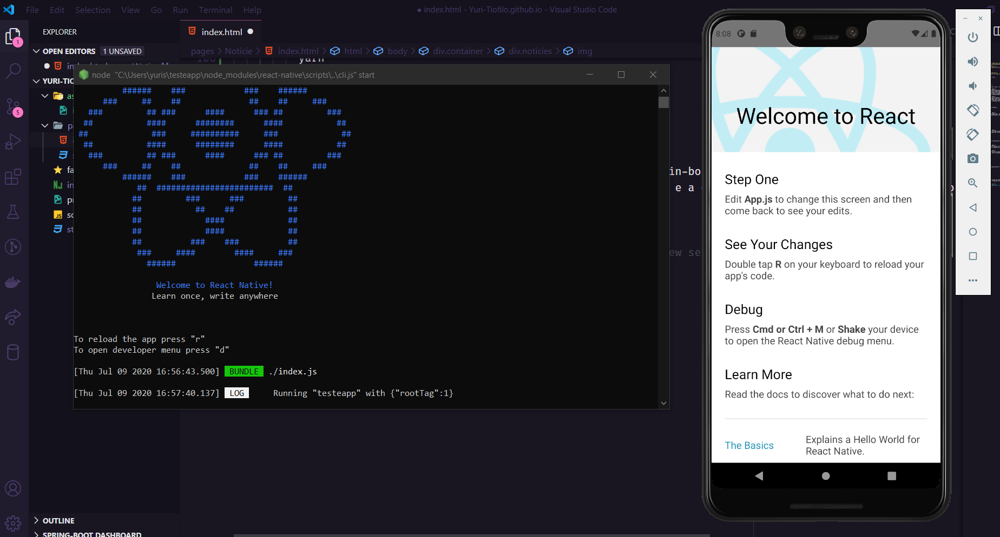

O React Native é um projeto que foi desenvolvidos pelo Facebook e consiste em uma série de ferramentas que viabilizam a criação de aplicações móveis nativas para a plataforma iOS e Android, utilizando o que há de mais moderno no desenvolvimento Front-end, mirando no futuro. É o estado da arte no que se refere ao desenvolvimento mobile baseado em JavaScript.
A stack do React Native é poderoso, pois nos permite utilizar ECMAScript 6, CSS Flexbox, JSX, diversos pacotes do NPM e muito mais. Sem contar que nos permite fazer debug na mesma IDE utilizada para o desenvolvimento nativo com essas plataformas (além de tornar o processo extremamente divertido).
Para iniciar um projeto segundo a comunidade não é necessário instalar a CLI do React Native, basta executar o comando por meio do pacode NPM ou Yarn. Abaixo temos o comando necessário para realizar isto:
O comando acima é quando você utiliza um template com a linguagem de programação JavaScript, quando você necessita de um template utilizando TypeScript, basta realizar o comando:
Assim temos a criação de um projeto React Native com apenas um comando, claro que isso poderá levar alguns minutos. Porém já vem configurado todo o ambiente básico para inicializar o projeto.
Após isso basta iniciar o comando para entrar na pasta do projeto ao qual foi criado. E rodar o comando que irá iniciar seu emulador caso não tenha conectado nenhum disposito ao seu computador. O comando a ser dados é:
Ou caso estaja em um ambiente do Mac:
Com isso teremos o seguinte resultado: A abertura de Bundle e a do emulador rodando o aplicativo criado.
Ai está seu aplicativo...Agora basta seguir mais alguns tutoriais aqui do nosso blog para desenvolver um aplicativo TOP...